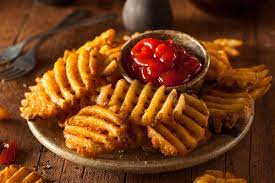

Waffle Fries

Description
These waffle fries are super crunchy, almost like shoestring potatoes, and served with a yummy homemade dipping sauce. A great snack for game night or as a side for burgers.
Ingredients
- Russet Potatoes (Peeled)
- Vegetable Oil
- Salt
Steps
- Cut the potatoes into waffle fries, using a waffle blade
- Add the cut fries to a bowl of ice water as they are done.
- Fry the waffle fries in batches until they are cooked through, then drain on wire racks.
- Increase the oil’s heat and fry the waffle fries again, until they are golden brown.
- Drain and season however you like.